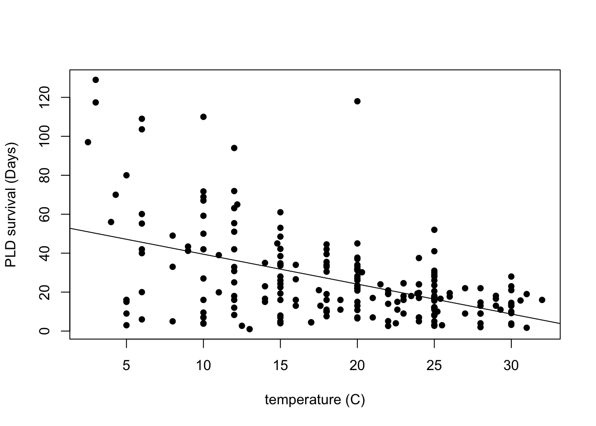
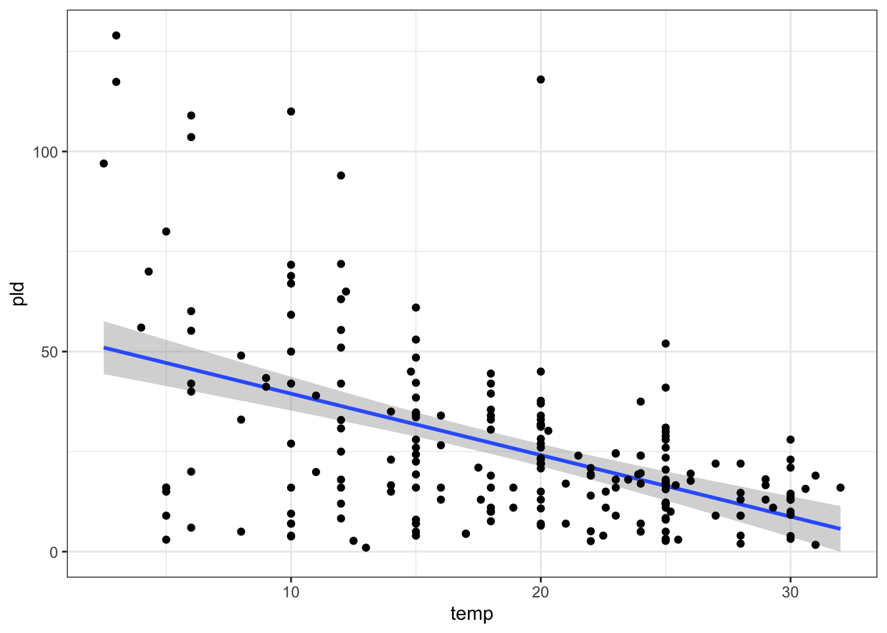
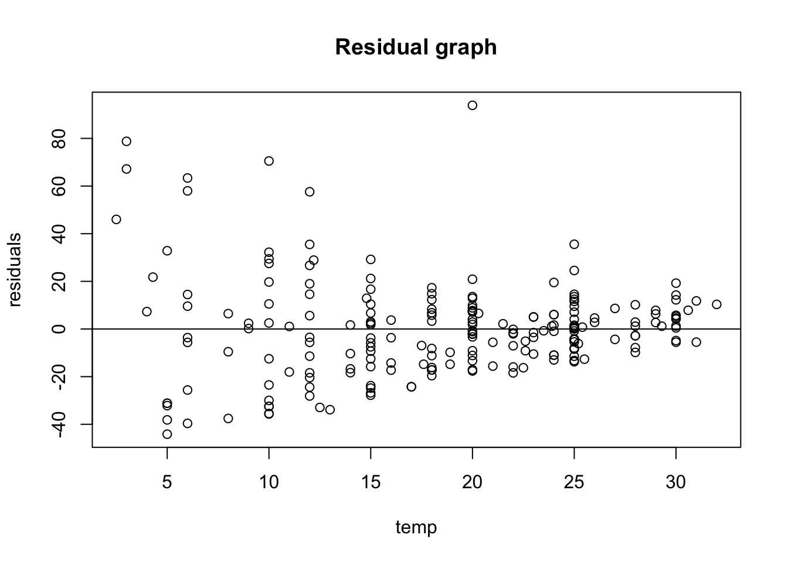
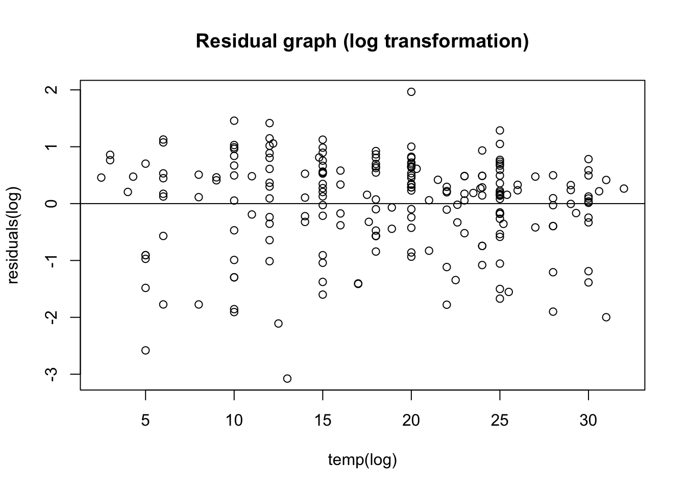
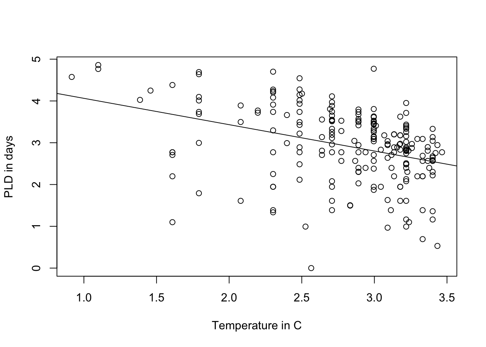
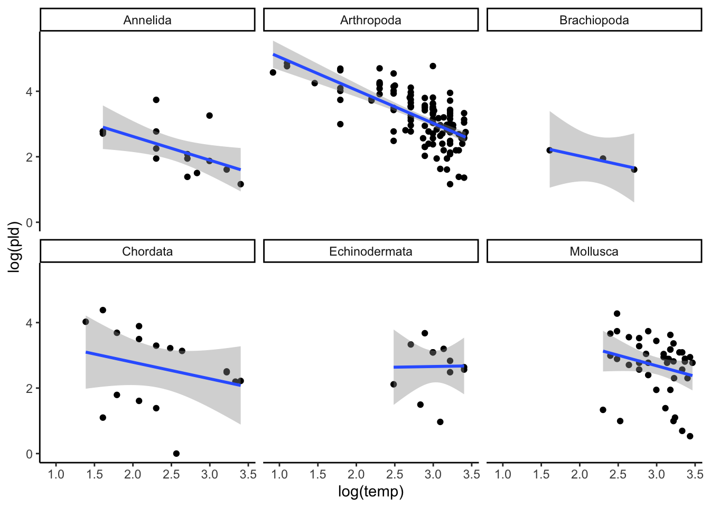
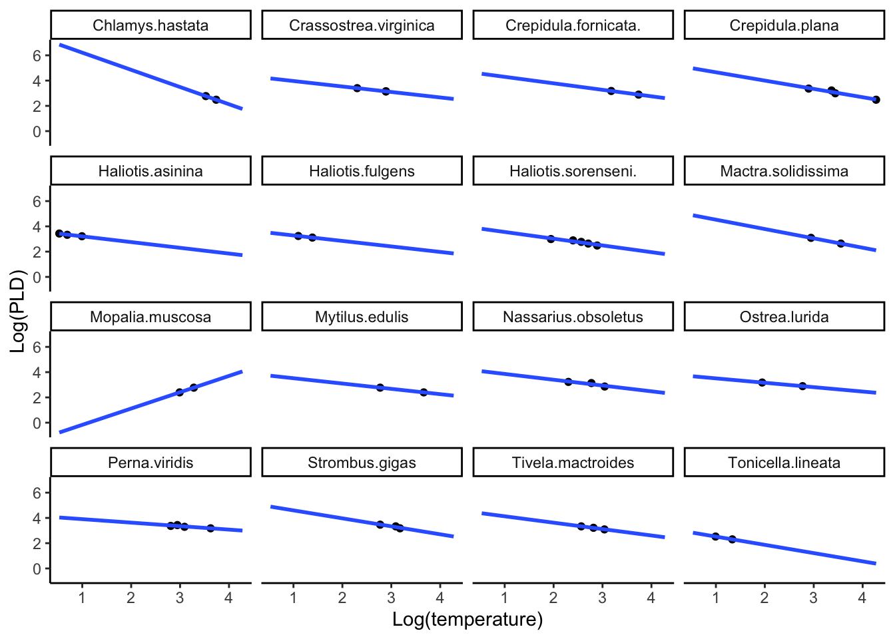

library(gt) # to make table outputs presentation/publication ready.
library(broom) # clean output.
library(knitr) # to make tables.
library(gtsummary) # extension to gt
library(lattice) # It is a powerful data visualization for multivariate data
library(lme4) # Fit linear and generalized linear mixed-effects models
library(arm) # Data Analysis Using Regression and Multilevel models
library(tidyverse) # for cleaning wrangling data19 Random Intercept Model
Learning how to use Random Intercept Models in R
19.1 Libraries Used
19.2 What is a Random Intercept model
Before talking about a random intercept model, let’s understand why they are necessary and important in the real world by discussing a variance component model first. This will make sense as we go along in this lecture.
19.2.1 Variance component model
We are familiar with a fixed level of a factor or variable. Which means that the factor level in an experiment is the only thing we are interested. For example, let’s say we are interested in measuring the difference in resistance resulting from putting identical resistors to three different temperatures for a period of 24 hours. Let’s say we have three different groups, and each of these three different groups have a sample size of 5. So each of the three treatment groups was replicated 5 times.
| Level 1 | Level 2 | Level 3 |
|---|---|---|
| 6.9 | 8.3 | 8.0 |
| 5.4 | 6.8 | 10.5 |
| 5.8 | 7.8 | 8.1 |
| 4.6 | 9.2 | 6.9 |
| 4.0 | 6.5 | 9.3 |
| mean | mean | mean |
| 5.34 | 7.72 | 8.56 |
In this example, the level of the temperature is considered fixed meaning, the three temperatures were the only ones that we are interested in. This is called a fixed effects model.
a fixed effect model is a statistical model in which the parameters are fixed or non-random. This can also be referred to a regression model, in which group mean are “fixed” (non-random) or in simpler, terms something that is “fixed” in analysis is constant like sex assigned at birth or ethnicity.
\[ y_i = \beta_0 + X_i\beta_i + \alpha_u + \epsilon_i \]
Now, let’s say we want to look at different levels of factors that were chosen because of random sampling, like number of operators working that day, lot batches, days etc. So in this case we are now regarding factors not related to themselves (variables) but we are now trying to represent all possible levels that these factors may take, the appropriate model is now a random effects model.
fitting these random effects models are important because we want to obtain estimates of different contributions that experimental factors make to the variability of our data! (we can represent this as the variance) this is what is called variance component
19.2.2 Why this is relevant
Well, a variance component model helps us see how much variance in our response at the different levels. But what if you are interested in seeing the effects of the explanatory variables? Or, what if your observations are NOT randomly sampled from simple random sample but instead from a cluster or a multi-level sampling design? Random intercept models or random effects models are important.
19.2.3 Example 1: School level data
Let’s say we have some data on exam results of students within a school and we use a variance component model and see that 15% of the variance is at the school level. Like for example, differing school districts, differing school policies etc. However, is it fair to really say that 15% of the variance in example scores is caused by schools? you could also say that maybe that part of the variance could be cause by the students being different themselves as well before taking the exam.
In this case, it might be important to control for the previous exams the students took, so you can look at the variance that is due to the things that happened when the students were at that school.
19.3 Fitting a single-level regression model
when we want to control for something (like previous exams students took) we can fit a single-level regression model that looks something like this:
\[y_1 = \beta_0 + \beta_1x_i + e_i\] where
\(y_1\) is your dependent variable
\(\beta_0\) is your intercept and
\(\beta_1\) is your slope parameter (which is also your slope treatment effect).
and \(e_i\) is your random error
When you have clustered data fitting this model causes problems. Clustered data is data where you observation or participants are related. Like exam results for students within a school, height of children within a family etc.
if we try to fit this clustered data:
our standard errors will be wrong.
this single level data model doesn’t show up how much variation is at the school level and how much much of the variation is at the student level.
So fitting this type of data in this regression we wont know how much of an effect the school level has on the exam score, after controlling for the previous score.
19.4 Solution: Fitting a Random Intercept model
So what we can do is combine the variance component and single-level regression model to build a random intercept model. So this random intercept model has 2 random terms. the level one random term: \(e_{ij} \sim N(0, \sigma_e^2)\) and the \(N(0, \sigma_u^2)\) and has two parts:
- a fixed part
- a random part
\[ y_{ij} = \overbrace{\beta_0 + \beta_1X_{ij}}^{\text{fixed part}} + \underbrace{u_j + e_{ij}}_{\text{random part}}\] where the fixed parts includes our parameters that we estimate as our coefficients, and the random part is the parameter we estimate as the variance \(e_{ij} \sim N(0, \sigma_e^2)\) and the \(N(0, \sigma_u^2)\) and these are allowed to vary and \(u_j\) and \(e_{ij}\) are normally distributed.
where:
\(y_{ij}\) is your dependent variable at \(i\) individual and \(j\) level
\(N(0, \sigma_u^2)\) is the measurement at the school level
and \(e_{ij} \sim N(0, \sigma_e^2)\) is the measurement at the student level
and \(i\) subscript is for the students
and \(j\) is the school subscript
we can also write this equation like so:
\[ Y_{ij} = \mu + b_i + \varepsilon_{ij} \]
where
\(Y_{ij}\) is your dependent outcome of intested for a subject \(i\) at school \(j\)
\(\mu\) is the population average mean
\(b_i\) is the random students effects (you have a random effect for every student)
\(\varepsilon_{ij}\) is your random error.
19.5 Final key points
random intercept models are used for answering questions about clustered data, and at different levels. For example, what is the relationship between exam scores at 11 and at age 16? how much variation is there between students progress from 11 to 16 at the school level?
\(b_i\) is the error associated with the students.
\(\varepsilon_{ij}\) is the random error.
for a random intercept model, each individual will have a random intercept, but the sample slope.
19.6 Assumptions of a random effects model:
unobserved cluster effects is not correlated with observed variables (all \(u_{ij}\) terms are not correlated with the your predictors.)
the within and between effects are the same.
your error term is independent with your constant term.
you have homoscedasticity
\(b_i\) and \(\varepsilon\) are independent of each other
19.7 hypothesis of a random effects model:
hypothesis testing for a random effects model runs as follows:
\[ H_0: \sigma^2_u = 0\] \[H_1: \sigma^2_u \not = 0\] the null hypothesis states that if \(\sigma^2_u\) is true, then the random component is not needed in this model. so you can fit a single level regression model. to do this, you would can do a likelihood ratio test comparing the two model to see if sigma is significant. In other words, seeing if there is no difference in intercepts. If there is NO difference in intercepts (or the slopes are similar), then a random intercept model or random component is not needed.
19.8 Example 2: Planktonic larval duration (PLD)
this is example is from O’Connor et al (2007). A brief intro on this study, temperature is important for the development of organisms. In marine species, temperature is very important and linked to growth. So the time spent as a planktonic larvae can have associations on mortality and regulation on the species. Previous research has looked at the association between species comparison but not within species comparisons. What if we are interest in within and between species variation?
19.8.1 load PLD data
PLD <- read_table("../data/04_PLD.txt")I am curious about the structure of this data and how it briefly looks.
#strcuture
str(PLD)spc_tbl_ [214 × 5] (S3: spec_tbl_df/tbl_df/tbl/data.frame)
$ phylum : chr [1:214] "Annelida" "Annelida" "Annelida" "Annelida" ...
$ species: chr [1:214] "Circeus.spirillum" "Circeus.spirillum" "Circeus.spirillum" "Hydroides.elegans" ...
$ D.mode : chr [1:214] "L" "L" "L" "P" ...
$ temp : num [1:214] 5 10 15 15 20 25 30 5 10 17 ...
$ pld : num [1:214] 16 16 4 8 6.5 5 3.2 15 9.5 4.5 ...
- attr(*, "spec")=
.. cols(
.. phylum = col_character(),
.. species = col_character(),
.. D.mode = col_character(),
.. temp = col_double(),
.. pld = col_double()
.. )# just the top - seeing how it looks
head(PLD)# A tibble: 6 × 5
phylum species D.mode temp pld
<chr> <chr> <chr> <dbl> <dbl>
1 Annelida Circeus.spirillum L 5 16
2 Annelida Circeus.spirillum L 10 16
3 Annelida Circeus.spirillum L 15 4
4 Annelida Hydroides.elegans P 15 8
5 Annelida Hydroides.elegans P 20 6.5
6 Annelida Hydroides.elegans P 25 5 # brief summary
summary(PLD) phylum species D.mode temp
Length:214 Length:214 Length:214 Min. : 2.50
Class :character Class :character Class :character 1st Qu.:12.28
Mode :character Mode :character Mode :character Median :20.00
Mean :18.59
3rd Qu.:25.00
Max. :32.00
pld
Min. : 1.00
1st Qu.: 11.00
Median : 19.30
Mean : 26.28
3rd Qu.: 33.45
Max. :129.00 I am curious about how this would look just plotting the variable pld or planktonic larvae duration and the temperature. So i am interested in seeing how the temperature is associated with their their survival duration.
# how to plot in base R
plot(pld ~ temp, data = PLD,
xlab = "temperature (C)",
ylab = "PLD survival (Days)",
pch = 16)
# add lm line in base R
abline(lm(pld ~ temp, data = PLD))
you can also do this in ggplot plot like so:
ggplot(data = PLD) +
aes(y = pld, x = temp) +
stat_smooth(method = "lm") +
geom_point() +
theme_bw()
19.8.2 Fit first model: Linear model
Let’s first fit a linear model and check any assumptions. Why are we fitting a linear model first? It might be important to check the standard error of this model and compare to the next model, that might be a better fit later on.
# fitting linear model first
LinearModel_1 <- lm(pld ~ temp, data = PLD)
summary(LinearModel_1)
Call:
lm(formula = pld ~ temp, data = PLD)
Residuals:
Min 1Q Median 3Q Max
-44.158 -11.351 -0.430 7.684 93.884
Coefficients:
Estimate Std. Error t value Pr(>|t|)
(Intercept) 54.8390 3.7954 14.449 < 2e-16 ***
temp -1.5361 0.1899 -8.087 4.65e-14 ***
---
Signif. codes: 0 '***' 0.001 '**' 0.01 '*' 0.05 '.' 0.1 ' ' 1
Residual standard error: 20.36 on 212 degrees of freedom
Multiple R-squared: 0.2358, Adjusted R-squared: 0.2322
F-statistic: 65.4 on 1 and 212 DF, p-value: 4.652e-14We can fit this output in a gtsummary to make it nicer looking:
LinearModel_1 |>
tbl_regression()| Characteristic | Beta | 95% CI1 | p-value |
|---|---|---|---|
| temp | -1.5 | -1.9, -1.2 | <0.001 |
| 1 CI = Confidence Interval | |||
I am interested in checking out visually, the equal variance (homoscedasticity) and so i will plot a a base residual graph:
# better to do a scatter plot
LinearModel_res <- resid(LinearModel_1)
# plot residual
plot(PLD$temp, LinearModel_res,
ylab = "residuals",
xlab = "temp",
main = "Residual graph"
)
abline(0,0)
Just upon visual observation, it seems like this assumption may be violated so i think it might be important to do some transformations.
19.8.3 Log transformation
LinearMode_2Log <- lm(log(pld) ~ log(temp), data= PLD)
summary(LinearMode_2Log)
Call:
lm(formula = log(pld) ~ log(temp), data = PLD)
Residuals:
Min 1Q Median 3Q Max
-3.0768 -0.3956 0.1802 0.5461 1.9656
Coefficients:
Estimate Std. Error t value Pr(>|t|)
(Intercept) 4.6946 0.3128 15.011 < 2e-16 ***
log(temp) -0.6308 0.1093 -5.771 2.77e-08 ***
---
Signif. codes: 0 '***' 0.001 '**' 0.01 '*' 0.05 '.' 0.1 ' ' 1
Residual standard error: 0.8236 on 212 degrees of freedom
Multiple R-squared: 0.1358, Adjusted R-squared: 0.1317
F-statistic: 33.31 on 1 and 212 DF, p-value: 2.767e-0819.8.4 residual of new log transformed graph
# better to do a scatter plot
LinearModel2_res <- resid(LinearMode_2Log)
# plot residual
plot(PLD$temp, LinearModel2_res,
ylab = "residuals(log)",
xlab = "temp(log)",
main = "Residual graph (log transformation)"
)
abline(0,0)
A bit better! Now i kinda want to see the original plot i plotted with PLD and temperature:
plot(log(pld) ~ log(temp), data = PLD,
xlab = "Temperature in C",
ylab = "PLD in days")
abline(LinearMode_2Log)
in ggplot you can use the facet_wrap() function to separate by phylum:
ggplot(data = PLD) +
aes(x = log(temp), y = log(pld)) +
geom_point() +
stat_smooth(method = "lm") +
facet_wrap(~phylum) +
theme_classic()
19.9 Fitting a random intercept model (random intercept, same slope)
I am interested in seeing if the overall temperature and the PLD relationship is similar among species, but not the same. We are interested in plotting a mixed effects model with a random intercept but fixed/same slope. I am only interested in the species-specific plot for now with the phylum Mollusca.
# filter to only mollusca
Mollusca_subset <-
PLD |>
filter(phylum == "Mollusca")
ggplot(data = Mollusca_subset) +
aes(x = log(pld), y = log(temp)) +
geom_point() +
labs(x = "Log(temperature)",
y = "Log(PLD)") +
stat_smooth(method = "lm", formula = "y ~ x", se = FALSE, fullrange = TRUE) +
theme_classic() +
facet_wrap(~ species)
19.9.1 fitting model
We can use the library lme4 to fit a model of a linear regression with a random effect
# creating log -transformed variables
Mollusca_subset$log_pld <- log(Mollusca_subset$pld)
Mollusca_subset$log_temp <- log(Mollusca_subset$temp)
# mixed model with random intercept only
RandIntModel_Mollusca <- lmer(log_pld ~ log_temp + (1 | species), data = Mollusca_subset)
summary(RandIntModel_Mollusca)Linear mixed model fit by REML ['lmerMod']
Formula: log_pld ~ log_temp + (1 | species)
Data: Mollusca_subset
REML criterion at convergence: 43.7
Scaled residuals:
Min 1Q Median 3Q Max
-2.37222 -0.32686 -0.09382 0.43821 2.34871
Random effects:
Groups Name Variance Std.Dev.
species (Intercept) 0.86457 0.9298
Residual 0.03309 0.1819
Number of obs: 44, groups: species, 16
Fixed effects:
Estimate Std. Error t value
(Intercept) 7.1728 0.5284 13.575
log_temp -1.5175 0.1592 -9.531
Correlation of Fixed Effects:
(Intr)
log_temp -0.896the
fixed effects:section in the output is the estimate for the fixed slope, and the grand mean of the intercept. in the fixed effects section the intercept here is the random effect, and you can see thisin the
Random effectssection in this output, in this case our random effect was specified in the theNamessections, which tells us the parameter is the intercept.the
Groupsection tells us we have a random intercept for each species. We also have the variance and standard deviation for the random effects (as well as the residuals)
Since we have a random effect at the individual level, we can subset this section out so it is clear to see that these organism will have a random intercept and fixed slope.
# subset of the coefficients for random intercept and fixed slop
coef(RandIntModel_Mollusca)$species (Intercept) log_temp
Chlamys.hastata 7.612748 -1.51751
Crassostrea.virginica 7.592515 -1.51751
Crepidula.fornicata. 8.045609 -1.51751
Crepidula.plana 8.063220 -1.51751
Haliotis.asinina 5.807247 -1.51751
Haliotis.fulgens 6.083069 -1.51751
Haliotis.sorenseni. 6.688210 -1.51751
Mactra.solidissima 7.589660 -1.51751
Mopalia.muscosa 7.061086 -1.51751
Mytilus.edulis 7.141801 -1.51751
Nassarius.obsoletus 7.370159 -1.51751
Ostrea.lurida 6.967626 -1.51751
Perna.viridis 8.144314 -1.51751
Strombus.gigas 8.048942 -1.51751
Tivela.mactroides 7.677603 -1.51751
Tonicella.lineata 4.871674 -1.51751So now we can see that in the Mollusca subset, we have all random intercepts for individual specifies, but the same slope.
19.9.2 Inter class correlation coefficient (ICC)
for a random intercept model, we can run a diagnostic called the inter-class correlation coefficient (ICC), which lets us know how much group specific information is available for the random effect. this is somewhat similar to the ANOVA, in which it looks at the variability within groups compared to the variability between groups. Low ICC means that observation within group don’t really cluster.
\[ ICC = {\sigma^2_{\alpha} \over \sigma^2 + \sigma^2_\alpha} \]
# creating data frame
var <- as.data.frame(VarCorr(RandIntModel_Mollusca))
#check our data frame
var grp var1 var2 vcov sdcor
1 species (Intercept) <NA> 0.86457141 0.9298233
2 Residual <NA> <NA> 0.03309183 0.1819116#ICC equation
ICC <- var$vcov[1] / (var$vcov[1] + var$vcov[2])
# ICC value
ICC[1] 0.9631356In our model, the \(\sigma^2_{\alpha}\) is 0.8645 (also the vcov part) and the \(\sigma^2\) is 0.033. so once we do the mathematics we get 0.9631. Which is the proportion of the total variance in Y that is accounted for by clustering. This is a high value and therefore, suggesting we have within-group variability, so it might be good we are running this random effects model.
19.10 Interpretation of results
summary(RandIntModel_Mollusca)Linear mixed model fit by REML ['lmerMod']
Formula: log_pld ~ log_temp + (1 | species)
Data: Mollusca_subset
REML criterion at convergence: 43.7
Scaled residuals:
Min 1Q Median 3Q Max
-2.37222 -0.32686 -0.09382 0.43821 2.34871
Random effects:
Groups Name Variance Std.Dev.
species (Intercept) 0.86457 0.9298
Residual 0.03309 0.1819
Number of obs: 44, groups: species, 16
Fixed effects:
Estimate Std. Error t value
(Intercept) 7.1728 0.5284 13.575
log_temp -1.5175 0.1592 -9.531
Correlation of Fixed Effects:
(Intr)
log_temp -0.896Interpretation: Summary of this PLD data includes information about the random effects. Here we can see that the column groups shows the random effect variable. in the name section, you can see that the random effect is our intercept. so we have the variation due to the species. in the Residuals section, this is the variation that cannot be explained by the model (the error). As you will notice our Standard error is smaller compared to the ordinary regression we ran in the previous one. Standard error for this model is 0.15 and the previous standard error for the first model we ran was 0.18.
So 0.86 / 0.86 + 0.03 = 0.96 , so the difference between between species can explain 96% of the variance that is is left over after the variance is explained by our fixed effect. since the random effects of the species explain most.
there is a very long description on the why the lmer() function doesn’t include the p-value that can be found here.
interpretation of temp variable for the fixed part, we can interpret this parameter the same as a single-level regression model, so \(\beta_1\) is the increase/decrease in response for 1 unit increase/decrease in \(x.\) In other words, for one unit increase in the degrees of temperature, there is a -1.5 decrease in Planktonic larval duration. (or, as the temperature increase, the plankton duration is lower.)
19.11 Conclusion
In this lecture you learned about the importance of a random intercept model, when it is appropriate to use a random intercept model, the difference between an ordinary single-level model, and a random intercept model, the assumptions of the random intercept model, hypothesis testing for the variation, the Interclass correlation coefficient (ICC) and finally, how to interpret results from the fixed part and the random part of a random intercept model.
19.12 References
Abedin, Jaynal, and Kishor Kumar Das. 2015. Data Manipulation with r. Packt Publishing Ltd.
Annesley, Thomas M. 2010. “Bars and Pies Make Better Desserts Than Figures.” Clinical Chemistry 56 (9): 1394–1400.
Anscombe, Francis J. 1973. “Graphs in Statistical Analysis.” The American Statistician 27 (1): 17–21.
Borer, Elizabeth T, Eric W Seabloom, Matthew B Jones, and Mark Schildhauer. 2009. “Some Simple Guidelines for Effective Data Management.” The Bulletin of the Ecological Society of America 90 (2): 205–14.
Borghi, John, Stephen Abrams, Daniella Lowenberg, Stephanie Simms, and John Chodacki. 2018. “Support Your Data: A Research Data Management Guide for Researchers.” Research Ideas and Outcomes 4: e26439.
Broman, Karl W, and Kara H Woo. 2018. “Data Organization in Spreadsheets.” The American Statistician 72 (1): 2–10.
Chamberlin, Thomas C. 1890. “The Method of Multiple Working Hypotheses.” Science 15 (366): 92–96.
supplementary material for Tom Snijders and Roel Bosker textbook - Shjders, T Bosker R, 1999. Multilevel analysis: an introduction to basic and advanced mltilevel modeling, London, Sage, including updates and corrections data set examples http://stat.gamma.rug.nl/multilevel.htm
University of Bristol, Random Intercept model, (2018). http://www.bristol.ac.uk/cmm/learning/videos/random-intercepts.html
Midway, S. (2019). “Data Analysis in R.” https://bookdown.org/steve_midway/DAR/random-effects.html